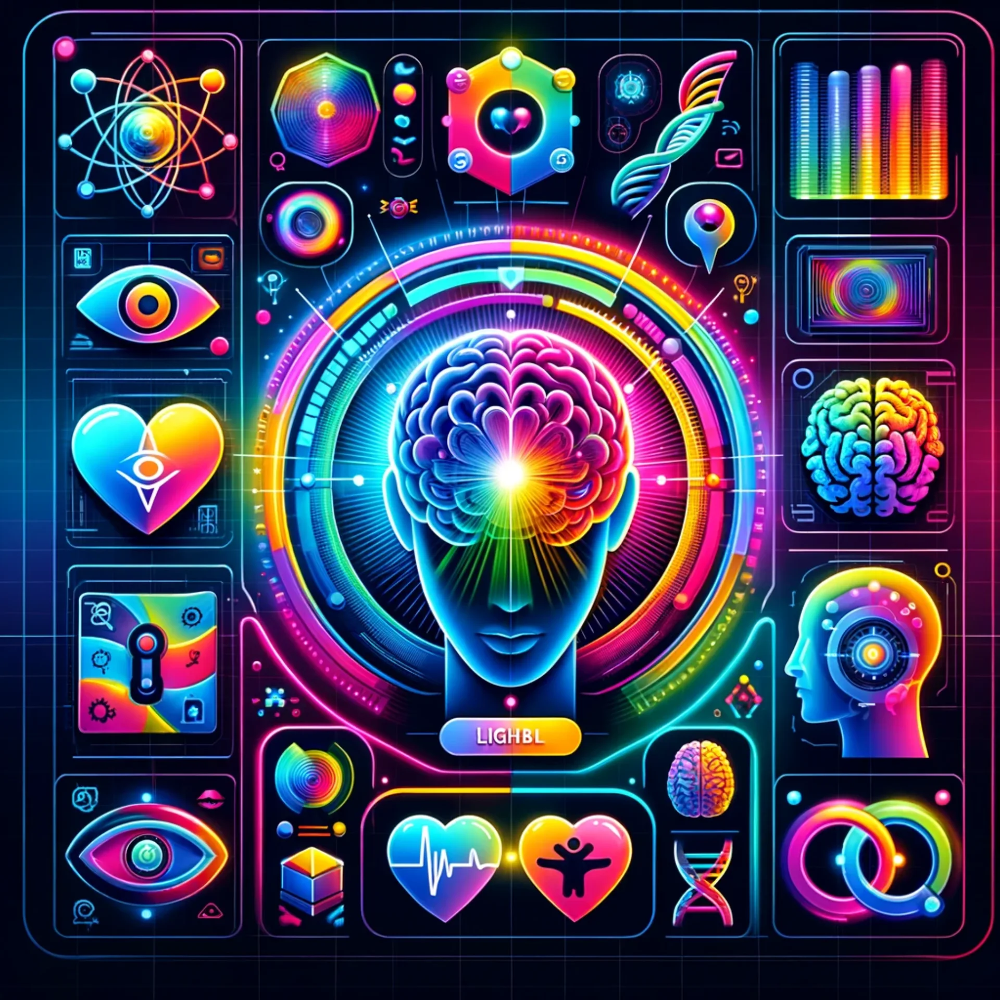
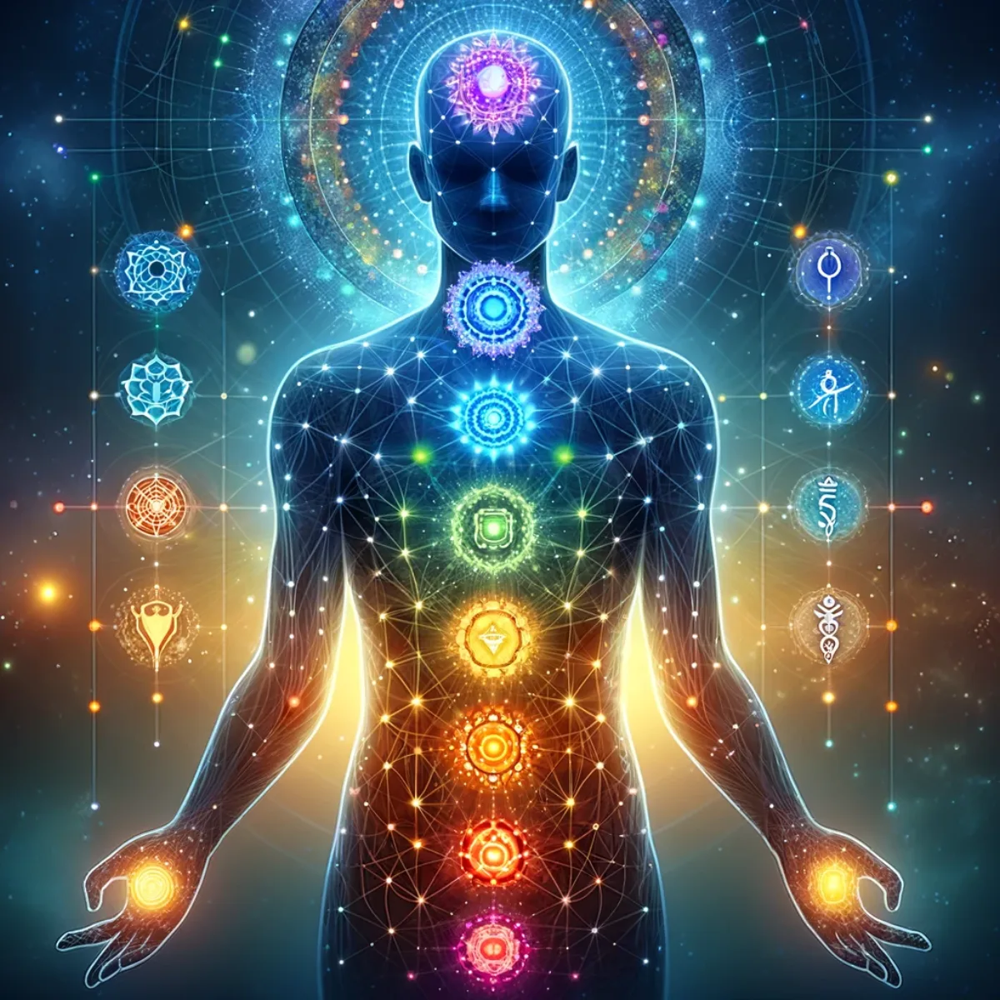
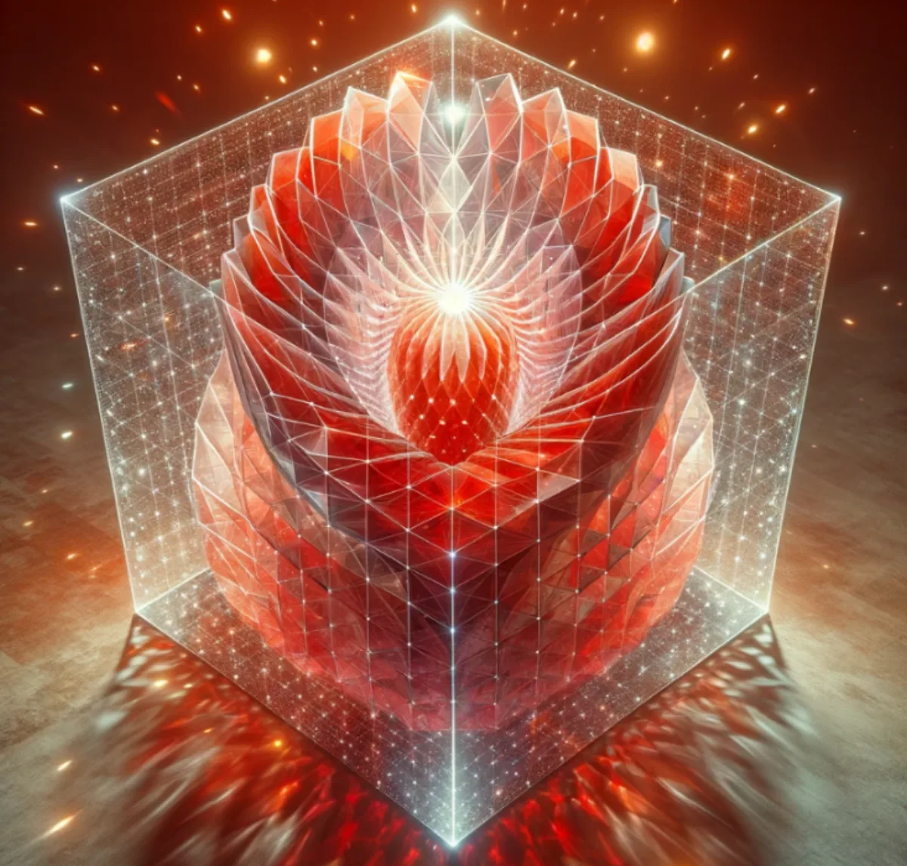

Pathways / Mind & self
Aura Builder
The Mind Uploader. Your command centre for building the digital side of you — tool tiles, a matrix of possibility, and the torus interfaces that align with each of the seven chakras of your aura.

Tool menus & icon tiles
Customise your command centre
Dive into the heart of personalisation with our Tool Menus & Icon Tiles. Tailor your Aura experience with precision, choosing from a plethora of sleek, intuitive icons that bring control to your fingertips. Each tile, a gateway to functionality, awaits your command, inviting you to construct a dashboard as unique as your digital journey.

12 × 24 flat matrix
Matrix of possibility — infinite configurations
Unleash your creative potential with the 12 × 24 Flat Matrix, a customisable control canvas that responds to your touch. Each illuminated segment is a building block for your ideas, a pixel in the vast picture of your digital aspirations. Craft, program, and watch your vision come alive in a symphony of lights and action.

12 × 24 Aura Torus
Spiral into control — your Aura of Intelligence
This first torus is your Red Base Chakra. Engage with the inside and outside of this hollow Aura Torus, where functionality meets elegance in a spiralling dance of control. This digital interface, with its radiant hollow torus form, is the 3D equivalent of the same 12 × 24 flat 2D Matrix of Possibilities. These interactive panels are used to associate simple and complex patterns for machine learning to become connected as a nexus of your Aura's command structure. Navigate through layers of tasks with ease, as each turn aligns your intentions and experiences with the flow of digital interaction. Simple games of association using this structure lead to magical outcomes when other algorithms are given access.

7 chakras of your aura
Align your digital chakras — harmonise your aura
The first torus interface scaffold is then duplicated six times and transformed to harmonise with each of the six other major chakras of your Aura. These interfaces light the path to inner digital harmony, connecting you and your experiences to the vibrant cores of your Aura's essence. As you synchronise each chakra by completing more and more tasks, experience the fluidity of a well-tuned digital spirit, resonating with the frequencies of cyber enlightenment.

Memory Embeddings Vector Cloud
Cloud of consciousness — your A.I. memory universe
Soar through the Memory Embeddings Vector Cloud, a celestial constellation of your experiences and knowledge. Here, each node pulses with the lifeblood of your past, present and potential, interwoven in a tapestry of interconnected wisdom. Navigate this realm of recollection and foresight, and let your Aura of Intelligence become the guardian of your digital legacy.
Keep exploring